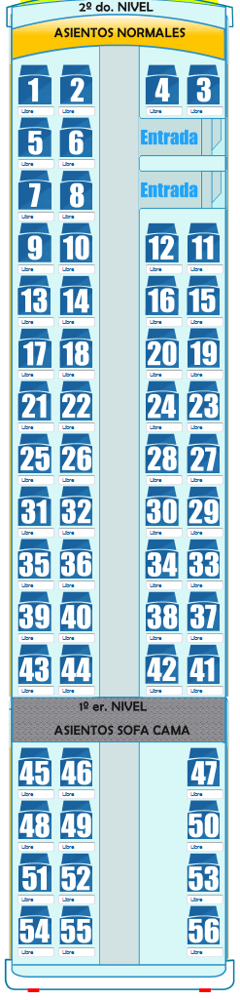

MD-4 - Bus de 2 Pisos
Detalles de la Librería de modelado:
Total de asientos, 56, total de asientos soportados solo 56.
Autor: ArielMax 2012.
Detalles de la Librería de modelado:
Total de asientos, 56, total de asientos soportados solo 56.
Autor: ArielMax 2012.